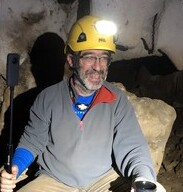

Philippe Monteil
Le temps d'une histoire


Le temps d'une histoire se déroule sur une année.
Après une rapide présentation des échelles de temps, une étoile explose.
De l'immense amas de poussières et de gaz résultant de cette explosion, naîtra le système solaire.
Nous sommes le 1er janvier de l'an I, et tout au long des mois de cette année, nous découvrons l'histoire de la Vie.

Philippe Monteil est professeur de mathématique. Etudiant, il a travaillé sur les modèles de temps en science fondamentale. Passionné de préhistoire et de spéléologie, il cherche à comprendre les mystères de la Terre.
Acheter le livre:

Retrouver ce livre sur: